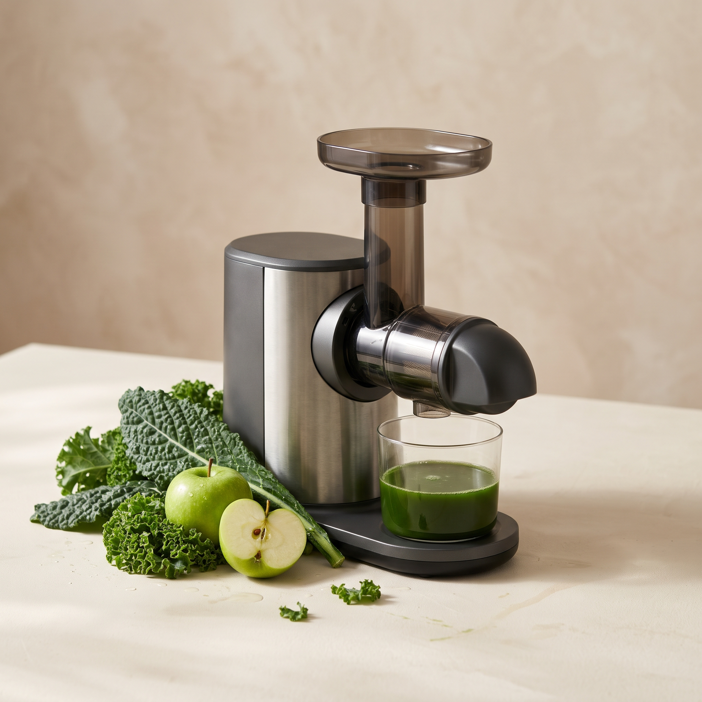
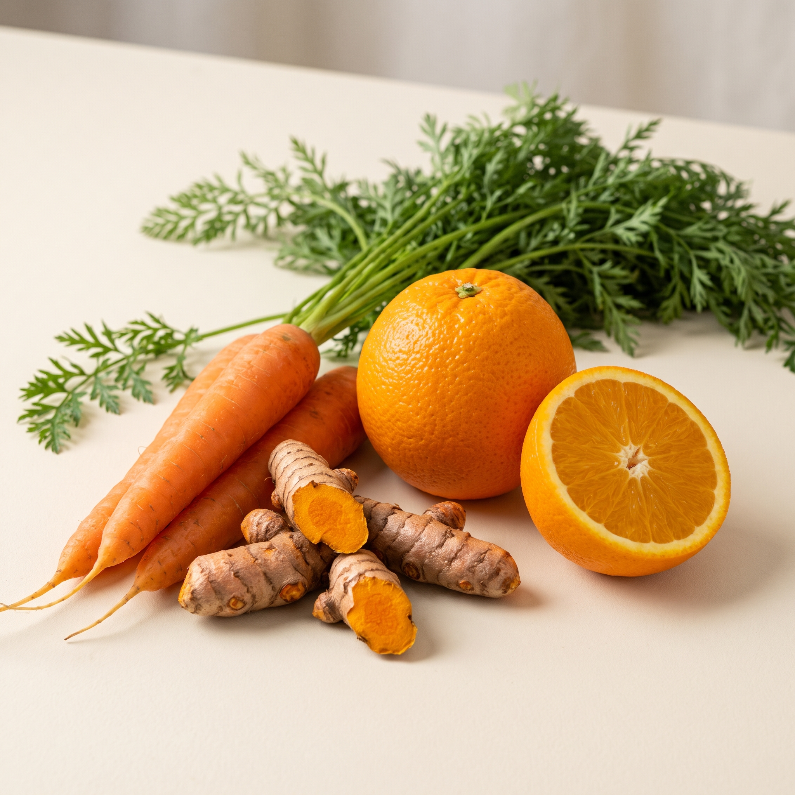
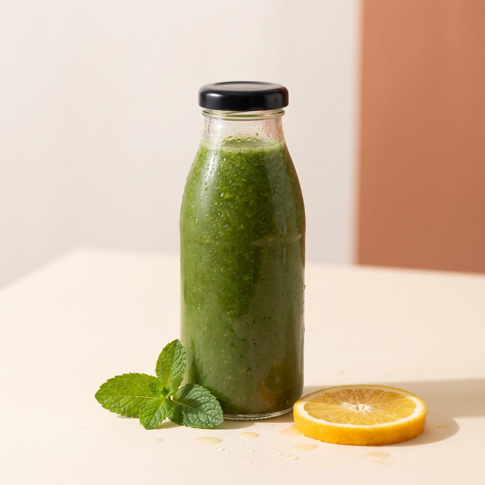
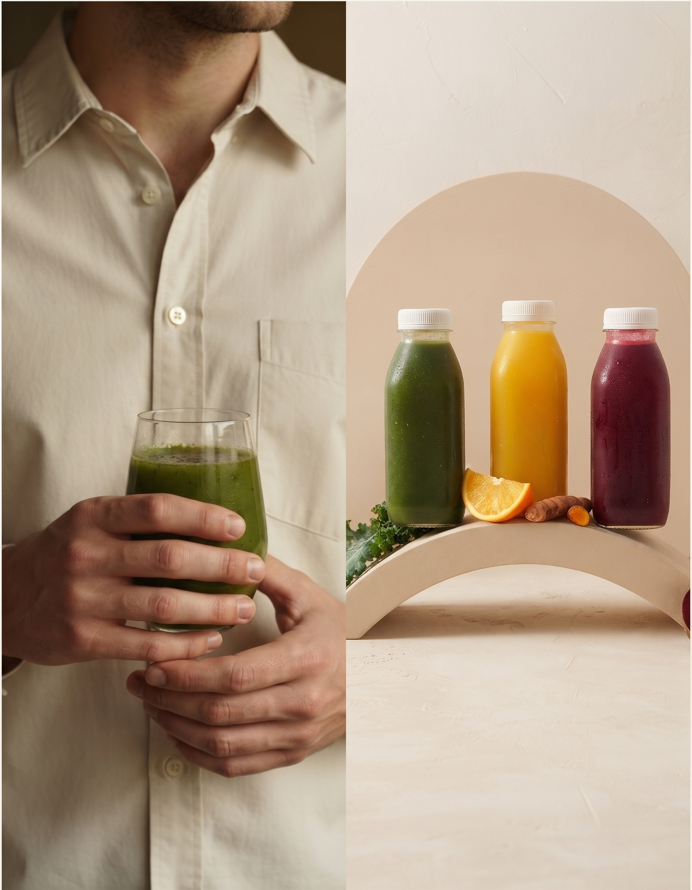

Prensagem sem calor
Extração lenta hidráulica que evita oxidação e mantém enzimas e vitaminas intactas.
Frutas frescas, raízes e folhas extraídas sem calor para preservar nutrientes, cor viva e sabor real — sem açúcar adicionado nem conservantes.
Da colheita local até a garrafa de vidro retornável, cada etapa preserva o frescor.

Extração lenta hidráulica que evita oxidação e mantém enzimas e vitaminas intactas.

Seleção diária com produtores da região, sem xaropes, corantes ou água adicionada.

Lotes pequenos feitos sob demanda para chegar gelado na sua casa ou trabalho.
Garrafas de 300ml. Adicione à sacola para fechar o pedido direto no WhatsApp.

A melhor forma de conhecer a Verbena Press. Selecionamos nossos três sabores mais vendidos em um kit exclusivo para você equilibrar sua rotina.